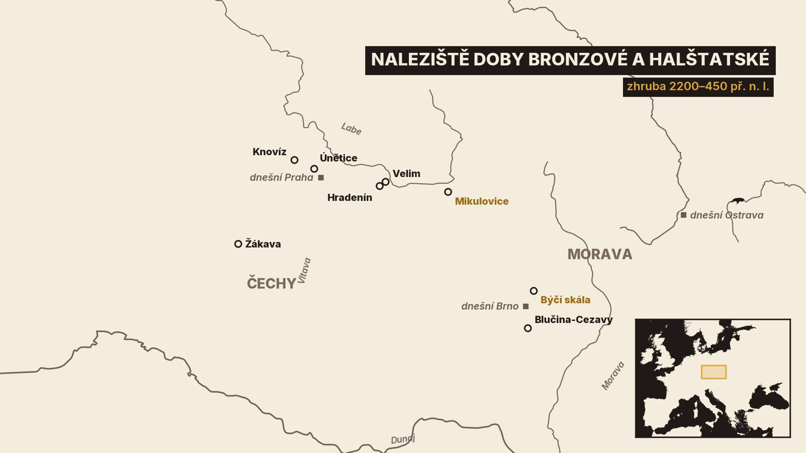
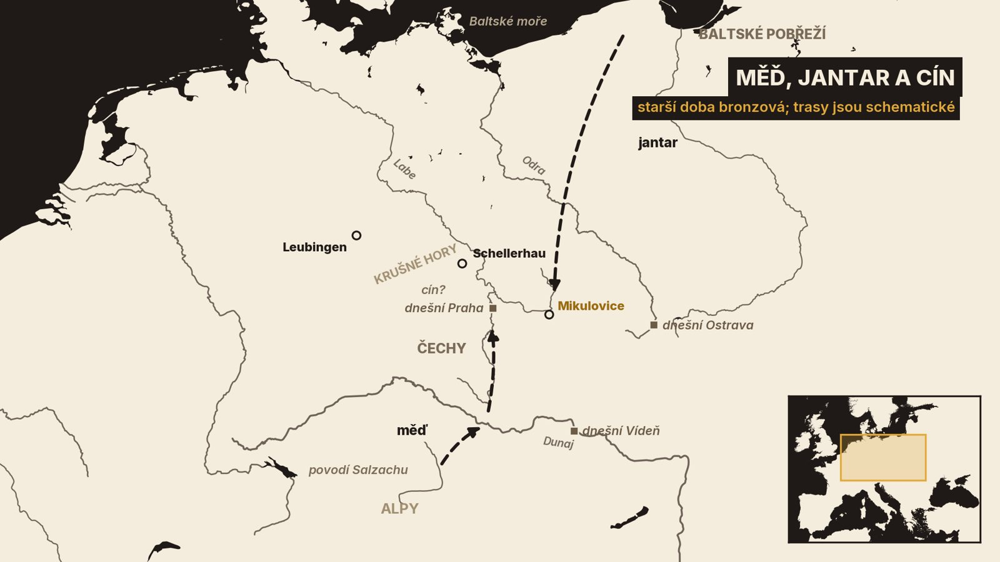
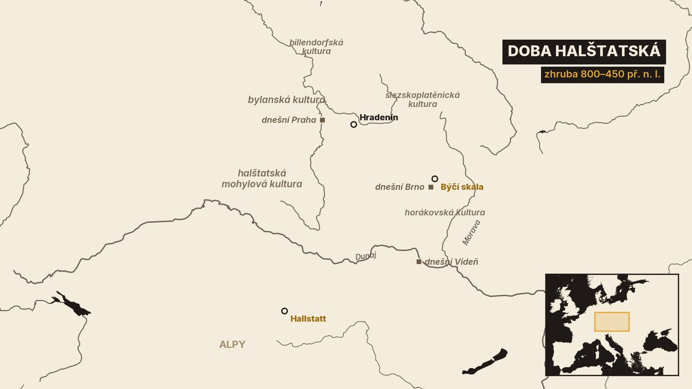

1. Jantar z Mikulovic
V letech 2007 až 2009 zkoumali archeologové u Mikulovic nedaleko Pardubic několik skupin hrobů z počátku doby bronzové[3]. Pracovali tu lidé z Archeologického ústavu Akademie věd v Praze a z Východočeského muzea v Pardubicích[3]. V hrobě číslo 2 ležela žena, která zemřela asi v pětatřiceti letech[3].
Měla u sebe pět bronzových náramků, tři bronzové jehlice a dvě zlaté ozdoby, kterým archeologové říkají záušnice[3]. A hlavně náhrdelník ze tří řad jantarových korálků. Bylo jich přes 400[3][16]. Archeolog Michal Ernée o něm řekl, že jde o naprosto unikátní šperk, který mezi nálezy z té doby nemá obdoby[3].
Jde o naprosto unikátní šperk, který mezi nálezy z této doby nemá obdoby.
Jak je hrob starý? Radiokarbonové datování z laboratoře v Mannheimu ho klade do let 1880 až 1750 př. n. l.[3].
Jantar je zkamenělá pryskyřice a u nás není domácí. Ten z českých hrobů té doby má podle rozborů baltský původ[1][3]. Někdo ho tedy musel dopravit přes velký kus Evropy.
Z kosti té ženy se podařilo získat DNA. Podle ní měla světlou pleť, hnědé vlasy a hnědé oči[3]. V roce 2022 dokončili v Moravském zemském muzeu rekonstrukci její podoby, založenou na dochované lebce a na těchto údajích[3].
V tomto díle projdeme skoro osmnáct století. Začneme u lidí, kteří se naučili odlévat bronz, a skončíme v době, kdy se u nás objevuje železo. Uvidíme hroby pod mohylami, pole plná uren a jeskyni Býčí skála, o které se archeologové přou už přes 150 let.
Stejně jako minule platí jedno upozornění. Z té doby nemáme z našich zemí žádný písemný pramen. Všechno stojí na nálezech, na jejich datování a na výkladu, který se s dalším výzkumem může změnit.
Začneme u kultury, ke které žena z Mikulovic patřila.
2. Únětická kultura
Jmenuje se únětická, podle obce Únětice u Prahy. Někdy na sklonku sedmdesátých let 19. století tam roztocký lékař Čeněk Rýzner prozkoumal dvě pohřebiště[1][18]. Nálezy uveřejnil i s plánky a jeho práce je v něčem použitelná dodnes[1]. Kde přesně obě pohřebiště ležela, ale dnes nevíme[1]. Název únětická kultura pak v roce 1892 jako první použil antropolog Jindřich Matiegka[1][19].
Kdy ta kultura žila? Starší doba bronzová začíná ve střední Evropě zhruba ve 23. století př. n. l.[1]. Trvá šest až sedm set let, podle toho, kam kdo klade její konec[1]. Největšího rozkvětu dosáhla únětická kultura na počátku 2. tisíciletí př. n. l., kdy bylo její osídlení Čech velmi husté[1].
Nejvíc nálezů je v povodí Labe a dolní Vltavy, kolem Prahy a na Kolínsku[1]. Únětická kultura ale nebyla jen česká. Známe ji z Moravy a její vliv zasahoval do Německa, Polska, Rakouska a na Slovensko[1].

Jak ti lidé žili? Hlavním zdrojem obživy bylo zemědělství[1]. Pěstovali pšenici, ječmen, žito, proso, hrách a čočku a chovali skot, prasata, ovce a kozy[1]. O jejich osadách víme málo. Podle malých pohřebišť archeologové soudí, že v jedné osadě žily tři až čtyři rodiny[1].
Mrtvé ukládali do hrobu ve skrčené poloze na pravý bok, hlavou k jihu a tváří k východu[1]. A tady je rozdíl proti minulému dílu. Kultury se šňůrovou keramikou a zvoncovitých pohárů ukládaly muže a ženy opačně. V únětických hrobech leží všichni stejně, bez rozdílu pohlaví[1][4].
Byli to potomci lidí se zvoncovitými poháry? Archeologie vidí návaznost. Podle novějšího pojetí vyrostla únětická kultura právě z prostředí kultury zvoncovitých pohárů[1]. Genetická studie koster z Čech z roku 2021 ale ukázala, že to nebylo tak jednoduché[4]. Na počátku únětické kultury přibyl do zdejší populace nový původ. Podle autorů tvořil nejméně dvě pětiny a pocházel nakonec odněkud ze severovýchodu[4]. Odkud přesně, určit nedokážou[4]. Sami připomínají, že od Baltu přicházel do Čech i jantar[4]. Na hrobech ani na předmětech přitom ta změna vidět není[4].
Zase tedy platí, že nádoby a geny nevyprávějí vždy stejný příběh.
Nejvíc ale únětickou kulturu odlišuje od starších dob kov.
3. Bronz a dálkové cesty
Bronz je slitina mědi a cínu[1]. Pojem doba bronzová zavedl dánský archeolog Thomsen. Bylo to v roce 1836, když pořádal sbírku muzea v Kodani[1].
Proti čisté mědi má bronz řadu výhod. Taví se při nižší teplotě, lépe se odlévá a kováním za studena výrazně ztvrdne[1]. Dají se z něj vyrobit věci, které dřív nešly: srpy, dláta, dýky a později meče a přilby[1].
Kde se obě suroviny braly? Měď a cín se většinou nacházejí daleko od sebe, a tak musely fungovat dálkové cesty[1]. Měď do Čech přicházela z alpských dolů, podle převládajícího názoru z povodí řeky Salzach[1]. Vozila se jako hřivny. To jsou kruhy z hrubě kované mědi se zahnutými konci[1]. Jedna hřivna váží kolem 200 gramů[1]. Někteří badatelé je proto považují za předchůdce peněz[1].
Cesta vedla nejspíš od Dunaje přes Šumavu Vyšebrodským průsmykem a dál podél Vltavy do středních Čech[1]. Právě podél Vltavy leží v zemi sklady hřiven[1]. A v jižních Čechách se podél téže cesty soustřeďují nálezy baltského jantaru[1].

A cín? Tady dlouho chyběl doklad. Nabízejí se Krušné hory. Souhrnná práce pražského Archeologického ústavu z roku 2008 ale tamní těžbu v době bronzové označila za hypotézu[1]. O dvanáct let později vyšla studie z naleziště Schellerhau na saské straně hor[5]. Podle ní se tam cínová ruda z náplavů začala zpracovávat už na počátku 2. tisíciletí př. n. l.[5]. Autoři dodávají, že do té doby nebyla těžba cínu v době bronzové potvrzena nikde v Evropě[5].
Co dávali únětičtí lidé za měď na oplátku? To nevíme. Uvažuje se o zlatě z jihočeských řek nebo právě o cínu, ale přesvědčivý doklad chybí[1].
Hotové výrobky často končily v zemi. Archeologové takovým souborům říkají depoty[1]. Ze starší doby bronzové v Čechách jich jedna práce eviduje 117[1]. Proč je lidé ukládali? Mohly to být oběti i zásoba na horší časy. Jednoznačná odpověď není[1].
Jeden depot pochází z Kozích hřbetů u Horoměřic na okraji Prahy. Ve skalní rozsedlině tu leželo šest dýk a čepel sekery[1]. Všechny byly silně opotřebené a z rozsedliny je nejspíš nikdo neměl znovu vyzvednout[1]. Takové zbraně přitom zdůrazňovaly postavení svého nositele[1].
A tím se dostáváme k otázce, kdo v té společnosti rozhodoval.
4. Bohatí a mocní
Většina starších únětických hrobů má podobnou výbavu[1]. Některé hroby ale vybočují. Leží v nich dýka, sekera nebo zlato a archeologové jejich majitele považují za vůdčí osobnosti komunity[1]. Pokud jsou antropologické posudky správné, nebyli to jen muži[1].
Žena z Mikulovic k té vrstvě patřila také. Její hrob je podle archeologů nejbohatším ženským hrobem celé únětické kultury[3]. Na mikulovickém pohřebišti se našlo téměř 900 jantarových předmětů[3]. Jantarový náhrdelník tu byl ve více než dvou pětinách ženských hrobů[3]. Žádné jiné naleziště únětické kultury tolik jantaru nevydalo[3].
Měli ti lidé knížata? V Čechách pro to doklad nemáme. Hroby, kterým se říká knížecí, leží jinde: pod mohylami ve středním Německu[1]. Nejznámější je mohyla v Leubingenu. Dubové dřevo z tamního hrobu se podařilo datovat podle letokruhů. Strom byl poražen nejdříve kolem roku 1942 př. n. l., s možnou odchylkou deseti let[1]. Bohatství těch hrobů zřejmě pocházelo z obchodu se solí a z dílen na zpracování kovu[1]. Slovo kníže je tu ovšem jen pomůcka archeologů. Česká souhrnná práce ho píše v uvozovkách[1].
Česká únětická kultura podle archeologů stála hlavně na rozvinutém zemědělství[1].
Na konci starší doby bronzové se obraz mění. Lidé zakládají osady na výšinách, některé opevněné příkopem. Takové osady často hlídaly dálkové cesty[1]. Přibývá pohřbů přímo v sídlištních jamách[1]. A v jižních a západních Čechách se nad hroby prosazuje mohyla[1].
Právě mohyla dala jméno dalšímu období.
5. Mohyly
Střední době bronzové se říká doba mohylová. Mohyla je násep z hlíny nebo kamení navršený nad hrobem[1]. Tento zvyk tehdy spojil obrovské území, od Karpatské kotliny po Alsasko[1]. Podnět vyšel nejspíš z Karpatské kotliny. Jak přesně se šířil, zůstává podle archeologů v rovině spekulací[1].
Počátky mohylové kultury v Čechách dnes archeologové kladou už do 17. století př. n. l.[1]. Končí ve 13. století př. n. l.[1]. Trvala tedy nejméně čtyři sta let, déle, než se dřív soudilo[1].
Nejvíc mohyl známe z jižních a západních Čech[1]. Na některých pohřebištích jich je přes sto[1]. V úrodných krajích středních Čech je nejspíš většinou zničilo pozdější hospodaření[1].
Jedno pohřebiště leží v lese Sváreč u Žákavy na Plzeňsku. Původně tu stály 92 mohyly[1]. Část z nich prozkoumal už v 19. století badatel Franc[1]. Pod jednou mohylou našel jámu se střepy, kamenným brouskem a zlomky formy na odlévání sekerky[1]. Byla to první stopa sídliště této kultury[1].
Na další sídliště se čekalo dlouho. Starší badatelé proto považovali lidi mohylové kultury za kočovné pastevce[1]. Dnes je jejich sídlišť z Čech známo přes dvě stě. Nálezy bronzových srpů a zásobních jam mluví o usedlých zemědělcích[1].
Jak se pod mohylami pohřbívalo? Obojím způsobem. Někdy ukládali celé tělo, častěji ho spálili[1]. Přísné pravidlo neexistovalo[1]. Velikost mohyly přitom o bohatství pohřbeného nic neříká[1]. Výše postavené lidi poznáme podle výbavy, podle zlatých šperků nebo zbraní[1].
Mění se i bronz. Přibývá druhů výrobků, objevují se složité tvary a nové techniky odlévání[1].
Ke konci tohoto období vzniklo u Velimi na Kolínsku místo, které archeology mate dodnes.
6. Velim a popelnicová pole
Návrší se jmenuje Skalka. Velký záchranný výzkum tu začal v roce 1984[1]. Archeologové odkryli několik soustav příkopů. Vnitřní ohraničuje plochu o průměru asi 160 metrů[1]. Vnější má průměr přes tři sta metrů[1].
V příkopech a jamách leželo množství lidských koster, spolu s keramikou a se zlatými a bronzovými předměty[1]. Většina kostí byla rozházená, bez ladu a skladu[17]. Areál zanikl na přechodu k době popelnicových polí[1]. Radiokarbonová data kladou jeho zničení někam kolem roku 1400 př. n. l.[17].
Co se tu dělo? Výklady jsou nejméně tři. První je kultovní místo. Český archeolog Jiří Hrala tu viděl lidské oběti a uvažoval i o lidojedství[1][17]. Česká souhrnná práce o nich píše také, zároveň ale přiznává, že prokázat lidojedství je složitější, než se dřív zdálo[1]. Jiný výklad nabídla německá archeoložka Heidi Peter-Röcherová[6]. Podle ní šlo především o pohřebiště, kde se konaly rozsáhlé pohřební obřady[6]. Mezi mrtvými jsou totiž muži, ženy i děti všech věkových skupin v běžném zastoupení. To se podle ní s výkladem o obětech těžko slučuje[6].
Třetí výklad je válečný. Britský archeolog Anthony Harding, jehož tým ve Velimi také kopal, pohřebiště odmítá[17]. Chybějí podle něj úplné kostry i hrobová výbava[17]. Jeho tým roku 2007 dospěl k závěru, že opevněné místo dobyli nepřátelé a jeho obyvatele pobili[17]. Sám dodává, že tím nejde vysvětlit všechno[17]. Česká souhrnná práce uzavírá, že povaha areálu zatím uspokojivě objasněna není[1].
Podobné místo známe i z Moravy[1][6]. Na hradišti Cezavy u Blučiny se našly skoro dvě desítky bronzových depotů a mnoho lidských kostí[7].
Kolem poloviny 13. století př. n. l. začíná mladší doba bronzová[1]. Velká část Evropy tehdy přijala stejný zvyk. Mrtvé spálit a popel uložit v nádobě, v urně, na rozsáhlém společném pohřebišti[1]. Odtud název popelnicová pole[1].
V Čechách vedle sebe žily tři kultury. Ve středních, jižních a severozápadních Čechách knovízská, na západě milavečská, na severu a východě lužická[1]. Hranice mezi knovízskou a lužickou kulturou se udržela přes pět set let[1]. Knovízská kultura má jméno podle naleziště u Knovíze na Kladensku[1].
Výroba bronzu tehdy dosáhla vrcholu[1]. Nejvíc je také depotů a nejčastějším předmětem v nich je srp[1].
Knovízská kultura má i temnější stránku. Na jejích sídlištích se v jamách nacházejí lidské kostry a jednotlivé kosti, některé s rozbitou lebkou[1]. Starší badatelé v tom viděli jasný doklad lidojedství. Dnešní autoři jsou opatrnější. Lidojedství podle nich pravděpodobně existovalo, ale stopy vaření nebo okusování kostí jsou zjištěny jen výjimečně[1]. Jisté je to, že část lidí tehdy běžný pohřeb nedostala[1].
Na konci doby bronzové vyrůstají opevněná sídla na výšinách a podle archeologů se začíná tvořit vrstva bojovníků[1]. V nejbohatším českém hrobě z té doby, v Hostomicích na Teplicku, ležel bronzový meč. Vedle něj byly čtyři hroty oštěpů a nůž. Všechny z nového kovu, ze železa[1].
Tím se dostáváme do doby, která podle železa dostala jméno.
7. Železo a halštat
Dobou halštatskou začíná ve střední Evropě doba železná[2]. Jméno má podle Hallstattu v rakouské Solné komoře. Jsou tam solné doly a pohřebiště s bohatě vybavenými hroby[2]. V Čechách ji archeologové počítají zhruba od roku 800 př. n. l.[2]. Někteří připouštějí i začátek o půl století později[2].
Železo se stává běžným materiálem na nástroje a zbraně, zpočátku ještě vedle bronzu[2]. Jedna věc je ale překvapivá. Železné předměty jsou v českých hrobech i na sídlištích od počátku této doby běžné. A přesto z Čech neznáme jednoznačný doklad toho, že se tu železo také tavilo z rudy[2].
Mění se i společnost. Znakem postavení se stávají zbraně, jízda na koni a vůz tažený koňmi[2]. Do střední Evropy proudí zboží a nápady z jihu, hlavně od Etrusků a Řeků[2].
V Čechách se tehdy stýkají dva okruhy. Střední a severozápadní Čechy patří bylanské kultuře, západní a jižní Čechy halštatské mohylové kultuře[2]. Východ a sever země zůstává u tradice popelnicových polí[2]. Bylanská kultura trvá do poloviny 6. století př. n. l.[2]. Jméno má podle pohřebiště v Bylanech u Českého Brodu[2]. Nejsou to Bylany u Kutné Hory, o kterých jsme mluvili minule.

Její nejbohatší hroby mají dřevěnou komoru[2]. Do některých pozůstalí uložili celý čtyřkolový vůz[2]. Dřevo se rozpadlo. Dochovaly se železné ráfy kol, kování a hřeby[2]. Kola měla průměr přes 80 centimetrů[2]. K vozu patřil koňský postroj a jho pobité bronzem, jaké se našlo v Hradeníně na Kolínsku[2]. V hrobě stály řady nádob. V nejbohatších jich bylo až sedmdesát[2].
Kdo v těch komorách ležel? Archeologové těm hrobům říkají knížecí, ale sami to označení mají za zkreslující[2]. Nejspíš šlo o náčelníky poměrně malých komunit[2]. Lidé pohřbení jen s koňským postrojem mohli patřit k jejich družině[2]. Silně opevněná hradiště ve starším úseku doby halštatské ještě nevznikala[2].
Nejslavnější nález doby halštatské z českých zemí ale neleží v Čechách. Leží v jeskyni v Moravském krasu.
8. Býčí skála
Jeskyně Býčí skála leží u Habrůvky na Blanensku[10]. Její vstupní síni se říká Předsíň. V roce 1869 tu dva bratranci z nedalekých Olomučan našli malou bronzovou sošku býčka[21]. Nález sem přivedl Jindřicha Wankela, kterému se říká otec moravské archeologie[9][21]. Na podzim roku 1872 v Předsíni kopal[9].
Našel pozůstatky asi čtyřiceti lidí[8]. Kolem ležely bronzové a keramické nádoby, železné zbraně, zlaté a bronzové ozdoby, tisíce skleněných a jantarových korálků a zbytky několika vozů[8]. Nálezy i soška býčka jsou dnes v Přírodovědném muzeu ve Vídni[12][13].
Wankel nález nejdřív označil za obětiště[9]. Později ho proslavil jiným výkladem. Podle něj tu byl pohřben velmož a do hrobu ho doprovodila družina mladých žen[9]. Pomlčel přitom o tom, že mezi mrtvými byli i muži[9].
Od té doby se výklady střídaly. V osmdesátých letech 20. století přišli badatelé s tím, že lidi v jeskyni zabil výbuch[9]. Podle pozdější kritiky byl takový výbuch technicky nemožný[9]. Na konci století převládl názor, že šlo o obětiště[9]. Tak nález dodnes popisuje vídeňské muzeum[12]. Archeologický atlas České republiky píše, že výklad je nejasný a nejčastěji se uvažuje o kultovním a obětním místě[8].
Nový výzkum přišel až v letech 2020 a 2021[10][11]. Vedl ho archeolog Martin Golec z Univerzity Palackého v Olomouci[14]. Poprvé od Wankelových časů se podařilo zdokumentovat neporušené vrstvy z doby halštatské[10]. Ukázalo se, že část z nich jsou písčité náplavy po povodních Jedovnického potoka[11].
Golcův tým z toho vyvozuje jiný obraz[13][14]. Jeskyně podle něj nebyla místem jedné hromadné oběti. Byla to svatyně, do které zdejší elita ukládala své mrtvé, generaci za generací[13][14][15]. Golec ji klade zhruba mezi lety 575 a 450 př. n. l.[10][14]. Černá vrstva, kterou Wankel pokládal za stopu ohně, podle nich vznikla tlením[14].
Je to zatím nejnovější slovo, ne poslední. Stojí na dvou sezonách výzkumu v několika malých sondách[10][11]. Rozbory odebraných vzorků se podle zprávy z výzkumu teprve vyhodnocují[10]. Celý příběh ukazuje, jak moc u stejných kostí záleží na metodě a na době, ve které je badatel vykládá.
Než se rozloučíme, shrňme si, co si z doby bronzové a halštatské odnést.
9. Co si odnést
Za prvé: starší dobu bronzovou u nás představuje únětická kultura. Začíná zhruba ve 23. století př. n. l. a trvá šest až sedm set let[1].
Za druhé: bronz potřebuje měď a cín a ty musely přijít z dálky. Měď z Alp, opačným směrem putoval baltský jantar. Žena z Mikulovic ho měla na krku přes 400 korálků[1][3].
Za třetí: dobu bronzovou dělíme na tři úseky podle toho, jak lidé pohřbívali. Nejdřív hroby se skrčenými kostrami, potom mohyly a nakonec pole uren s popelem[1].
Za čtvrté: kolem roku 800 př. n. l. začíná doba železná. Nejbohatší lidé se nechávají pohřbívat s vozem[2].
A za páté: u Velimi ani u Býčí skály se archeologové dodnes neshodnou, co přesně se tam dělo[1][6][9][14][17].
Dvě otázky zůstávají otevřené. Odkud přesně pocházeli lidé, kteří na počátku doby bronzové změnili zdejší populaci? A byla Býčí skála obětištěm, nebo pohřebištěm? Na obě možná odpovědí další rozbory.
Řecký dějepisec Hérodotos v 5. století př. n. l. napsal, že řeka Istros, dnešní Dunaj, pramení v zemi Keltů[20]. Archeologové s Kelty spojují laténskou kulturu, která u nás na dobu halštatskou navazuje[2]. O ní bude příští díl.


_1.jpg){kind=link}


_culture,_NM_Prague,_188235.jpg){kind=link}